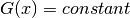
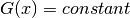
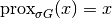

proximal_const_func¶
-
odl.solvers.nonsmooth.proximal_operators.proximal_const_func(space)[source]¶ Proximal operator factory of the constant functional.
Function to initialize the proximal operator of the constant functional defined on
space.Parameters: - space :
LinearSpace Domain of the functional G=constant
Returns: - prox_factory : function
Factory for the proximal operator to be initialized
Notes
The constant functional
 is defind as 
for all values of
is defind as 
for all values of  . The proximal operator of this functional is
the identity operator
. The proximal operator of this functional is
the identity operator
Note that it is independent of
 .
.- space :